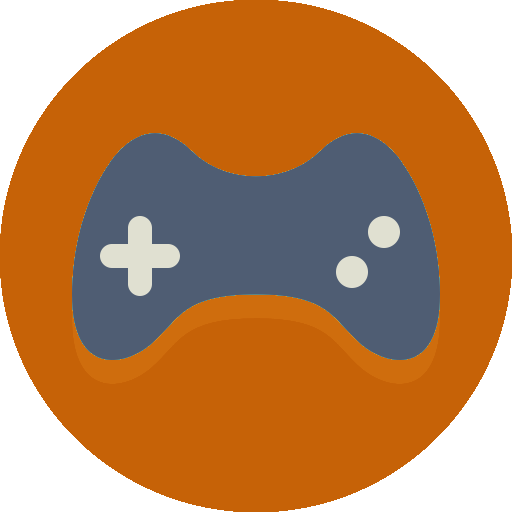

Projet CDIN | Le futur de l'Informatique

Game designer
- Présentation du métier : Présent de bout en bout dans la conception du jeu vidéo, le game designer joue un rôle essentiel dans l’univers du jeu.
- Missions : Donner vie à un environnement ludique, qu’il soit sur ordinateur, console, mobile, on line....
- Compétences : Savoir manager une équipe, connaître l’univers des jeux vidéo, créativité, originalité, organisation, rigueur, bonne culture générale.
- Formation :
- BAC+2 DUT Info/level designer, BTS communication visuelle;
- BAC+4 Master pro;
- École d'ingénieur ENJIMN/Isart Digital.
- Salaire :
- Début : Entre 1 600 € et 2 000 € brut par mois;
- Fin : jusqu’à plus de 3 500 € par mois.

Fiche métier réalisé sur le game designer.
Fiche faite par Yoann CACOUAULT.